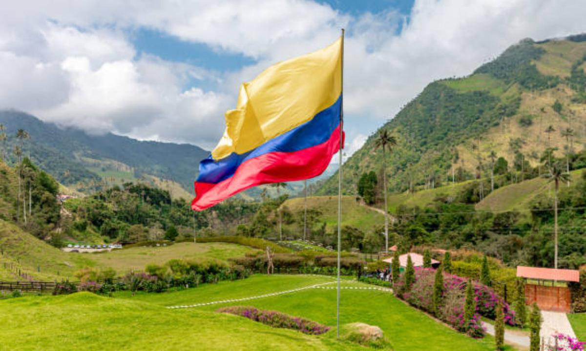

¿Qué son las 7 maravillas de Colombia?
En el 2007 el diario El Tiempo organizó un concurso para que los colombianos votaran por las 7 maravillas de Colombia. El objetivo de este era que las personas reconocieran los tesoros que tiene el país y eligieran los que, a su parecer, eran los más impresionantes y hermosos.
La condición para participar en el concurso, era que las maravillas debían ser obras construidas por el hombre, y que el costo de su construcción fuera digno de resaltar.
En total fueron alrededor de 225 bienes los postulados, de los cuales sólo quedaron 21 elegidos por expertos en cultura. De esos 21, y durante 2 semanas, los colombianos votaron y eligieron sus 7 maravillas favoritas.
Las 7 Maravillas de Colombia
Teatro Colón

Ubicado en Bogotá, el Teatro Colón es un ícono de la capital gracias a su majestuosa arquitectura neoclásica que data de finales del siglo XIX.
Fue construido por el arquitecto italiano Pietro Cantini, quien utilizó elementos muy llamativos para la época que permanecen hasta la actualidad como piedra tallada para la fachada, pinturas al fresco y un telón realizado en Florencia – Italia.
Parque Arqueológico Tierradentro

El Parque Arqueológico Nacional de Tierradentro, ubicado al norte del Cauca, es uno de los centros arqueológico más importantes de Colombia, ya que guarda vestigios importantes de la cultura precolombina. Su territorio comprende varias galerías subterráneas que funcionaban como tumbas colectivas y estatuas similares a las encontradas en San Agustín.
El Parque cuenta con dos museos: uno arqueológico y otro etnográfico, donde se conoce más acerca de la cultura Nasa que todavía habitan la zona luego de una fuerte resistencia a la colonia.
La Ciudad Perdida

La Ciudad Perdida o Teyuna es un pueblo antiguo ubicado en las alturas de la Sierra Nevada de Santa Marta, que data aproximadamente del año 660 d.C. Fue construido por los Tayrona, uno de los pueblos indígenas que habitan en esta zona, y está conformado por un sistema de construcciones, caminos empedrados, escaleras y terrazas.
En sus 35 hectáreas se han identificado construcciones habitacionales, centros ceremoniales, terrazas agrícolas y centros de almacenamiento, lo que lleva a pensar que aquí donde habitaba una parte significativa de la población Tayrona.
Arquitectura Militar de Cartagena de Indias

Cartagena de Indias fue uno de los puertos más importantes de América durante la colonia española, por lo que constantemente era atacado por piratas y tropas inglesas, holandesas y francesas.
En respuesta a esto, se realizaron varias construcciones militares para protegerse, como el Castillo San Felipe de Barajas, además de amurallar la ciudad con sus respectivos puestos de defensa con cañones.
Parque Arqueológico San Agustín

Ubicado al sur del Huila, este es uno de los sitios arqueológicos más importantes de Colombia, además de ser la necrópolis más grande de América.
En su territorio yacen cientos de tumbas y esculturas monolíticas que, según las particularidades de sus vestimentas, indumentaria y trabajo en piedra, indican que diferentes culturas de América del Sur traían a sus muertos para ser enterrados en esta zona.
Santuario de Las Lajas

El Santuario Nuestra Señora de Las Lajas es una basílica ubicada en Ipiales, en el Cañón del Río Guaitara, cuya construcción probablemente inició en el siglo XVIII. Desde entonces ha tenido varias etapas de remodelación y ampliación, siendo la última culminada a inicios del siglo pasado.
Catedral de Sal de Zipaquirá

Construida en el interior de una mina de sal en Zipaquirá, Cundinamarca, esta no es realmente una catedral sino un sitio de turismo religioso, que alberga una importante colección de obras esculturas religiosas realizadas en sal y mármol.
Resultados de las votaciones
Desliza para ver el resto de la tabla.
| Posición | Maravilla | Departamento | Municipio | Votos |
|---|---|---|---|---|
| 1 | Catedra de Sal de Zipaquirá | Cundinamarca | Zipaquirá | 6654 |
| 2 | Santuario de Las Lajas | Nariño | Ipiales | 5340 |
| 3 | Parque Arqueológico de San Agustín | Huila | San Agustín | 4680 |
| 4 | Arquitectura militar de Cartagena de Indias | Bolívar | Cartagena | 4389 |
| 5 | Ciudad Perdida (Teyuna) | Magdalena | Parque nacional natural Sierra Nevada de Santa Marta | 4374 |
| 6 | Parque Arqueológico de Tierradentro | Cauca | Inzá | 2787 |
| 7 | Teatro Colón | Cundinamarca | Bogotá | 2785 |